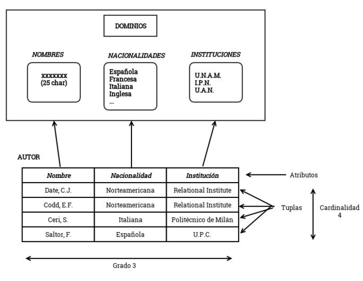
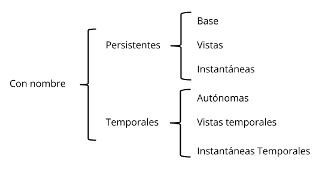
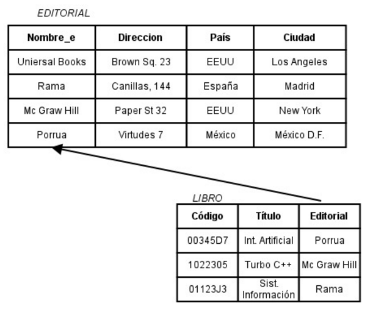
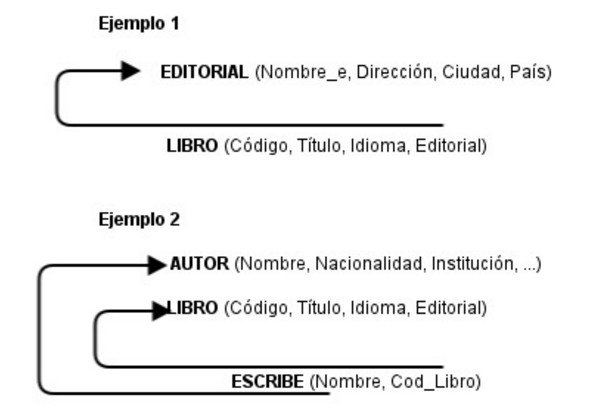

Introducción
La introducción realizada por Eduard "Ted" Codd, muy a finales de los sesenta, de la teoría matemática de las relaciones en el campo de las bases de datos supuso
un importante paso en la investigación de los SGBC, suministrando un sólido fundamento teórico para el desarrollo, dentro de este enfoque relacional de nuevos
sistemas.
El trabajo publicado por Codd en ACM presenta un nuevo modelo de datos que perseguía una serie de objetivos, muchos de ellos comunes a otros modelos, que se pueden
resumir en los siguientes:
-
Independencia física:
El modo en que se almacenan los datos no debe influir en su manipulación lógica y, por tanto, los usuarios que acceden a esos datos no han de modificar sus
programas por cambios en el almacenamiento físico.
-
Independencia lógica:
Añadir, eliminar o modificar cualquier elemento de la base de datos no debe repercutir en los programas y/o usuarios que están accediendo a subconjuntos
parciales de los mismos (vistas).
-
Flexibilidad:
En el sentido de poder ofrecer a cada usuario los datos de la forma más adecuada a la correspondiente aplicación.
-
Uniformidad:
Las estructuras lógicas de los datos presentan un aspecto uniforme (tablas), lo que facilita la concepción y manipulación de la base de datos por parte de
los usuarios.
-
Sencillez:
Las características anteriores, así como unos lenguajes de usuario muy sencillos, producen como resultado que el modelo de datos relacional sea fácil de
comprender y de utilizar por parte del usuario final.
La aparición del modelo relacional representa un verdadero hito en el desarrollo de las bases de datos, ya que marca tres etapas:
-
La pre relacional -primera generación de bases de datos-
en la que los SGBD se soportan en los modelos Codasyl y Jerárquico.
-
La relacional -segunda generación de bases de datos-
en la que los sistemas relacionales se van aproximando a su madurez y los productos basados en este modelo van desplazando poco a poco a los sistemas de
primera generación hasta conseguir una mayor cuota en el mercado de las bases de datos.
-
La post relacional -tercera generación de las bases de datos- en la que aparecen otros modelos de datos, en
especial los orientados al objeto, que están en estos momentos intentando abrirse un hueco en el mercado de las bases de datos. Sin embargo, casi nadie
se atreve a vaticinar, al menos a corto plazo, una sustitución de los sistemas relacionales por sistemas basados en otros modelos.
Estructura del Modelo Relacional
La relación es el elemento básico del modelo relacional, y se puede representar como una tabla.
| atributo 1 |
atributo 2 |
... |
atributo n |
| XXX |
XXX |
... |
XXX |
| XXX |
XXX |
... |
XXX |
| XXX |
XXX |
... |
XXX |
| XXX |
XXX |
... |
XXX |
Tabla 3.1. Representación de una relación en forma de tabla
En ella podemos distinguir nombre (puede haber relaciones, como aquellas que se obtienen como resultado de una consulta, que no tienen nombre), un conjunto
de columnas, denominadas atributos, que representan propiedades de la tabla y que también están caracterizadas por su nombre, y un conjunto de filas llamadas
tuplas, que contienen los valores que toma cada uno de los atributos para cada elemento de la relación.
En la Figura 3.1 se representa la relación AUTOR, en donde aparece la estructura del modelo relacional. En ella podemos observar el nombre de la relación
(AUTOR); los atributos (Nombre, Nacionalidad e Institución); los dominios (de donde los atributos toman sus valores;
varios atributos pueden tomar valores del mismo dominio); las tuplas (cada una de las cuales contiene los valores que toma el nombre, la nacionalidad y la
institución para un determinado autor); el grado (número de atributos); y la cardinalidad (número de tuplas).

Figura 3.1. Representación de la relación autor
Insistimos que una relación se puede representar como una tabla, aunque tiene una serie de elementos característicos que la distinguen de la tabla, ya que no se
admiten filas duplicadas, las filas y las columnas no están ordenadas y es plana, es decir, que el cruce de una fila y una columna sólo puede haber un valor
(no se admiten atributos multivariados). Se trata de restricciones inherentes al modelo que más adelante analizaremos.
En una tabla se puede distinguir una cabecera que define la estructura de la tabla; es decir, sus atributos con los dominios subyacentes, y un cuerpo que está
formado por un conjunto de tuplas que varían con el tiempo.
Esta representación de la relación como una tabla ha sido el origen de que los productos relacionales y los usuarios utilicen habitualmente el nombre de tabla
(en principio ajeno a la teoría relacional) para denominar las relaciones y, como consecuencia de ello, se llame filas a las tuplas y columnas a
los atributos; si bien, la terminología es irrelevante y un producto no es más o menos relacional por utilizar una u otra terminología.
| Relación |
Tabla |
Fichero |
| Tupla |
Fila |
Registro |
| Atributo |
Columnas |
Campo |
| Grado |
# Columnas |
# Campos |
| Cardinalidad |
# Filas |
# Registros |
Tabla 3.2. Ejemplo de la representación de una relación en forma de tabla
Dominio y atributo
Un dominio D es un conjunto finito de valores homogéneos y atómicos V1, V2, ..., Vn, caracterizado por un nombre; decimos
valores homogéneos porque son todos del mismo tipo, y atómicos porque son indivisibles en lo que al modelo se refiere, es decir, si se
descompusieran, perderían la semántica a ellos asociada.
Todo dominio debe tener un nombre, por el cual nos podemos referir a él, y un tipo de datos.
Un atributo A es el papel que juega un determinado dominio D en una relación; se dice que D es el dominio de A y se denota como dom(A). Así el atributo
Nacionalidad habla de AUTOR, definido sobre el dominio de Nacionalidades, nos indica que dicho dominio tiene el papel de
nacionalidad del autor en la referida tabla.
Un dominio compuesto se puede definir como una combinación de dominios simples a la que se pueden aplicar ciertas restricciones de integridad. Por ejemplo,
un usuario puede necesitar manejar, además de los tres dominios Día, Mes y Año, un dominio compuesto por ellos denominado Fecha.
Definición formal de Relación
Matemáticamente, una relación definida sobre los n dominios D1, D2, D3, ..., Dn no necesariamente distintos, es
un subconjunto del producto cartesiano de estos dominios, donde cada elemento de la relación (tupla) es una serie de n valores ordenados.
Nombre: Las relaciones se identifican por un nombre; si bien ciertas relaciones que no necesitan identificarse (por ejemplo, resultados intermedios).
Cabecera de relación: Conjunto de n pares atributo-dominio subyacente { ( Ai : Di ) }i=1n donde
n es el grado; se corresponde con la primera fila cuando la relación se percibe como una tabla. El conjunto A de atributos sobre los que se
define la relación se llama contexto de la misma.
Cuerpo de la relación: Conjunto de m tuplas {t1, t2, t3, ..., tm}, donde cada tupla es un conjunto
de n pares atributo-valor { ( Ai : Vij ) }, siendo Vij el valor j del dominio Di asociado al atributo
Ai; el número de tuplas m es la cardinalidad. Así como la cabecera de la relación es invariante, su cuerpo varía en el transcurso del
tiempo, al igual que la cardinalidad.
El esquema de relación estará construido por el nombre R -si existe- y la cabecera, que se denota:
R ( { Ai : Di }i=1n )
El estado de relación r(R), al que denominaremos simplemente relación, está constituido por el esquema y el cuerpo de la relación:
<esquema, cuerpo>
siendo el cuerpo el conjunto de tuplas que, en un instante dado, satisface el correspondiente esquema de relación.
Figura 3.2. Ejemplo del Esquema de Relación
Una base de datos relacionales una base de datos percibida por los usuarios como una colección de relaciones que varían con el tiempo, es decir, una colección de
variables de relación.
Clases de Relación
Existen diversas clasificaciones de las relaciones. En primer lugar, dividiremos las relaciones en nominadas y sin nombre. Las relaciones nominadas pueden ser:
-
Persistentes: Son aquellas relaciones cuya definición permanece en la base de datos, borrandose solamente mediante una acción explícita del usuario. Las
relaciones persistentes se dividen en:
-
Relaciones base. Existen por sí mismas, no en función de otras relaciones.
-
Vistas. Son relaciones derivadas que se definen dando un nombre a una expresión de consulta.
-
Instantáneas. Son relaciones derivadas al igual que las vistas, es decir, se definen en términos de otras relaciones nominadas, pero tienen datos
propios almacenados, los cuales son el resultado de ejecutar la consulta especificada o de guardar una relación base.
-
Temporales. A diferencia de las relaciones persistentes, una relación temporal desaparece de la base de datos en un cierto momento sin necesidad
de una acción o de borrado específica del usuario.

Figura 3.3. Clases de Relación
Claves
Una clave candidata de una relación es un conjunto de atributos que identifican unívoca y mínimamente cada tupla de la relación. Por la propia definición
de relación, siempre hay, al menos, una clave candidata, ya que al ser una relación siempre tiene que identificar unívocamente a una tupla. Por ejemplo, la
relación AUTOR tiene una clave candidata: el atributo Nombre, ya que suponemos que no existen dos autores con el mismo nombre.
Una relación puede tener más de una clave candidata, entre las cuales se debe distinguir:
-
Clave primaria: es aquella clave candidata que el usuario escogerá, por consideraciones ajenas al modelo relacional, para identificar las tuplas de
la relación. Cuando solo existe una clave candidata, ésta será la clave primaria.
-
Claves alternativas: son aquellas claves candidatas que no han sido escogidas como clave primaria.
Restricciones inherentes
Los modelos de datos tienen restricciones que impone el mismo modelo, el cual no admite ciertas estructuras: son las restricciones inherentes, que no son
definidas por los usuarios sino obligadas por el propio modelo, lo que le quita flexibilidad a la hora de representar el mundo real.
-
No hay dos tuplas iguales.
-
El orden de las tuplas no es significativo.
-
El orden de los atributos no es significativo.
-
Cada atributo sólo puede tomar un único valor del dominio sobre el que está definido, no admitiendo por tanto los grupos repetidos.
Toda relación debe estar normalizada, en caso contrario no es realmente una relación.
| Nombre |
Nacionalidad |
Instituto |
Idiomas |
| Date, C.J. |
Norteamericana |
Relational Institute |
Inglés, Español |
| Codd, E.F. |
Norteamericana |
Rlational Institute |
Inglés |
| Ceri, S. |
Italiana |
Politénico de Milán |
Italiano, Inglés |
| Slator, F. |
Española |
U.P.C. |
Español, Catalán |
Tabla 3.3. Tabla AUTOR1 no normalizada, por lo tanto no es una relación
| Nombre |
Nacionalidad |
Instituto |
Idiomas |
| Date, C.J. |
Norteamericana |
Relational Institute |
Inglés |
| Date, C.J. |
Norteamericana |
Relational Institute |
Español |
| Codd, E.F. |
Norteamericana |
Rlational Institute |
Inglés |
| Ceri, S. |
Italiana |
Politénico de Milán |
Italiano |
| Ceri, S. |
Italiana |
Politénico de Milán |
Inglés |
| Slator, F. |
Española |
U.P.C. |
Español |
| Slator, F. |
Española |
U.P.C. |
Catalán |
Tabla 3.4. Relación obtenida normalizando la tabla AUTOR1
Existe otra restricción inherente que es la regla de integridad de entidad, la cual impone que: "Ningún atributo que forme parte de la clave primaria de una
relación puede tomar un valor nulo".
Restricciones semánticas
Dentro del contexto relacional, como en otros modelos de datos, existen restricciones semánticas o de usuario, que son facilidades que el modelo ofrece a
los usuarios a fin de que estos puedan reflejar en el esquema, lo más fielmente posible, la semántica del mundo real.
-
Llave primaria. Permite declarar un atributo o un conjunto de atributos como clave primaria de una relación, por lo que sus valores no se podrán
repetir ni se admitirán los nulos.
-
Unicidad. Mediante la cual se indica que los valores de un conjunto de atributos no pueden repetirse en una relación. Permite la definición de
claves alternativas.
-
Obligatoriedad de uno o más atributos, con lo que se indica que el conjunto de atributos no admite valores nulos.
-
Integridad referencial. Si la relación R2 (relación que referencia) tiene un descriptor que es una clave candidata de la relación R1
(relación referenciada), todo valor de dicho descriptor debe concordar con un valor de la clave candidata referenciada de R1 o bien ser nulo.

Figura 3.4. Llave ajena de la tabla LIBRO que referencia a EDITORIAL
En la figura 3.5 se muestra una forma de representar las llaves ajenas.
En el ejemplo 1, el atributo Editorial de la relación LIBRO es la clave ajena que referencia a EDITORIAL, de modo que sus valores deben concordar
con la clave primaria de la relación EDITORIAL o bien ser nulos (los libros deben pertenecer a una editorial existente o, si se desconoce la editorial, tendrán
valor nulo para ese atributo).
En el ejemplo 2, la relación ESCRIBE posee dos claves ajenas: Nombre que referencia a la relación AUTOR y Cod_Libro que referencia a la relación
LIBRO. En este caso ninguna de las dos llaves ajenas puede tomar valores nulos, ya que forman parte de la llave primaria de la relación ESCRIBE.

Figura 3.5. Ejemplos de llaves ajenas